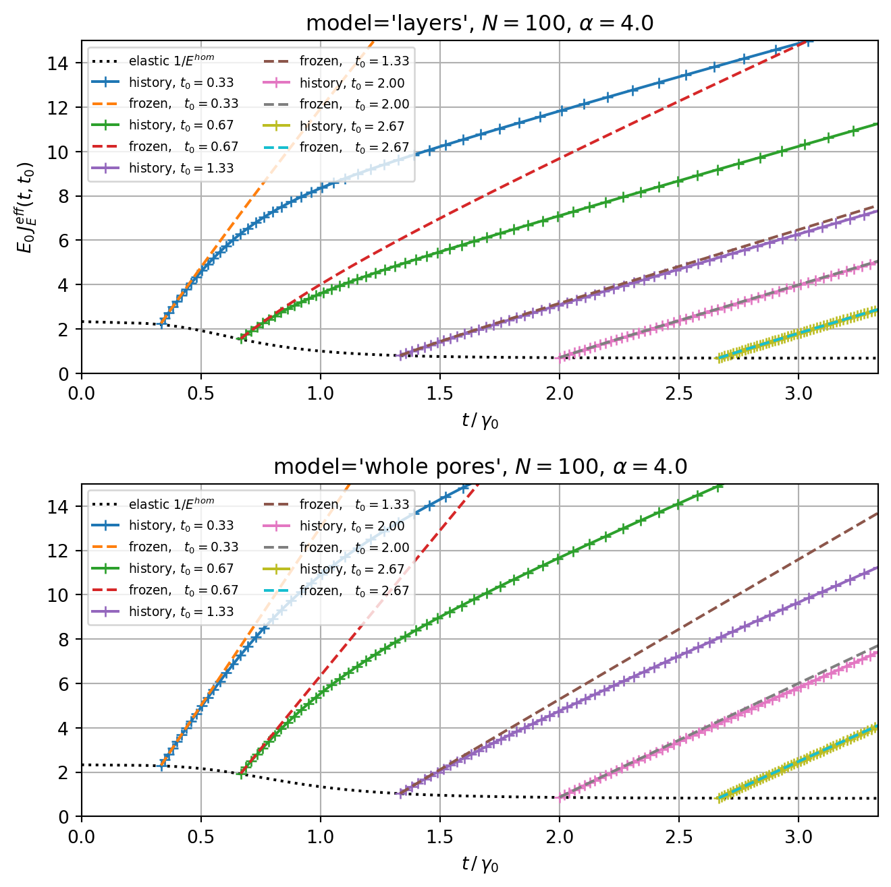

import numpy as np
from echoes import *
import matplotlib.pyplot as plt
np.set_printoptions(precision=6, suppress=True)25 Ageing creep of solidifying cementitious materials
Ageing viscoelasticity
For a non-ageing viscoelastic composite, the relaxation tensor depends only on the elapsed time \(t - t'\):
\[\mathbb{R}(t,t') = \mathbb{R}(t - t')\]
and the standard Laplace–Carson correspondence principle applies (see Chapter 16). For an ageing composite — where the microstructure itself evolves — \(\mathbb{R}(t,t')\) depends on both the current time \(t\) and the loading time \(t'\) independently, breaking the convolution structure:
\[\boldsymbol{\sigma}(t) = \int_{-\infty}^{t} \mathbb{R}(t,t') : \mathrm{d}\boldsymbol{\varepsilon}(t') \tag{25.1}\]
The effective ageing relaxation tensor \(\mathbb{R}^{hom}(t,t')\) must then be computed directly in the time domain, without recourse to the Laplace transform. This is precisely the setting of homogenize_visco in Echoes (see Chapter 17): any phase whose visco_prop is set to a two-argument function func(t, tp) is treated as ageing-viscoelastic.
Phase properties
The composite has three phases:
| Phase | Volume fraction | Stiffness | Rheology |
|---|---|---|---|
| Matrix | \(f_0 = 0.6\) | \(E_0=1\), \(\nu_0=0.2\) | Maxwell |
| Solidifying inclusions (final) | \(f_\infty = 0.3\) | \(E_1=5\), \(\nu_1=0.3\) | Maxwell |
| Pore (pre-solidified state) | \(f_p = 1-f_0-f_\infty\) | \(E_p \approx 0\) | elastic |
Both the matrix and the solidifying phase obey a Maxwell relaxation law with separate bulk and shear characteristic times:
\[R_r(t,t') = 3k_r\,e^{-(t-t')/\eta_r}\,\mathbb{J} + 2\mu_r\,e^{-(t-t')/\gamma_r}\,\mathbb{K} \tag{25.2}\]
where \(\mathbb{J} = \frac{1}{3}\uv{1}\otimes\uv{1}\) and \(\mathbb{K} = \mathbb{I} - \mathbb{J}\) are the volumetric and deviatoric projectors.
| Parameter | Matrix (\(r=0\)) | Solidifying (\(r=1\)) |
|---|---|---|
| \(k_r\) (bulk) | \(k_0 = C_0.k\) | \(k_1 = C_1.k\) |
| \(\eta_r\) (bulk char. time) | \(0.2\) | \(1.0\) |
| \(\mu_r\) (shear) | \(\mu_0 = C_0.\mu\) | \(\mu_1 = C_1.\mu\) |
| \(\gamma_r\) (shear char. time) | \(0.133\) | \(1.67\) |
# Elastic stiffness tensors
E0 = 1.; nu0 = 0.2; C0 = stiff_Enu(E0, nu0); f0 = 0.6
E1 = 5.; nu1 = 0.3; C1 = stiff_Enu(E1, nu1); finf = 0.3
Ep = E0 * 1.e-8; Cp = stiff_Enu(Ep, nu0); fp = 1 - f0 - finf
eta0 = 0.2; gamma0 = 0.133
eta1 = 1.; gamma1 = 1.67
# Maxwell relaxation tensors (eq. {#eq-maxwell})
# J4, K4 are the 6x6 Kelvin-Mandel volumetric and deviatoric projectors
R0 = lambda t, tp: 3 * C0.k * np.exp(-(t - tp) / eta0) * J4 \
+ 2 * C0.mu * np.exp(-(t - tp) / gamma0) * K4
R1 = lambda t, tp: 3 * C1.k * np.exp(-(t - tp) / eta1) * J4 \
+ 2 * C1.mu * np.exp(-(t - tp) / gamma1) * K4Solidification kinetics
The volume fraction of the solidified phase at time \(t\) follows a power-law growth:
\[f_{solid}(t) = f_\infty\,\frac{t^\alpha}{1+t^\alpha} \tag{25.3}\]
which tends to \(f_\infty\) as \(t \to \infty\). The exponent \(\alpha\) controls the rate of solidification. The inverse function — the time at which a fraction \(f\) of the solidifying phase has set — is:
\[t_k(f) = \left(\frac{f}{f_\infty - f}\right)^{1/\alpha} \tag{25.4}\]
To discretize this continuous process into \(N\) layers of equal volume \(f_\infty/N\), each layer \(k\) is assigned the setting time corresponding to the midpoint fraction:
\[f_k = \left(k + \tfrac{1}{2}\right)\frac{f_\infty}{N}, \quad t_k = t_k(f_k), \quad k = 0, \ldots, N-1 \tag{25.5}\]
ft = lambda t, alpha: finf * t**alpha / (1 + t**alpha) # eq. {#eq-solidification}
tf = lambda f, alpha: (f / (finf - f))**(1. / alpha) # eq. {#eq-setting-time}
F = lambda N: np.array([(i + 0.5) * finf / N for i in range(N)]) # midpoint fractions
tT = lambda N, alpha: tf(F(N), alpha) # setting times for N layersRVE construction
‘whole pores’ model
In this model, each of the \(N\) solidifying layers is a separate ellipsoidal inclusion in the RVE. The RVE contains \(N + 2\) phases: the permanent matrix, a single pore inclusion (fraction \(f_p\)), and \(N\) solidifying inclusions (each of fraction \(f_\infty/N\)).
This is conceptually straightforward but computationally expensive for large \(N\): each inclusion requires a separate Eshelby tensor computation.
‘layers’ model — efficient approach
The key contribution of (Sanahuja, 2013) is to pack all layers into a single multi-layer sphere (sphere_nlayers), with the pore as the outermost shell and the \(N\) solidifying layers inside (ordered by increasing setting time toward the center). The RVE reduces to 2 phases: MATRIX + one sphere_nlayers inclusion.
This reduces the \(N+1\) Eshelby problems of the ‘whole pores’ model to a single problem — a substantial efficiency gain for \(N = 100\) layers.
sphere_nlayers(radius=1.,
layer_fractions=[fp, finf/N, finf/N, ..., finf/N], # outermost = pore
fraction=fp + finf,
prop={"C": [Cp, C1(t0), C1(t0), ..., C1(t0)]},
visco_prop={"C": [R_pore, R_layer_0, R_layer_1, ..., R_layer_{N-1}]})(Innermost layers: set earliest, index \(N-1-i\) → latest setting time outward.)
History-dependent vs frozen approach
The central physical question is: does a solidifying layer carry memory of stress applied before it solidified?
History-dependent (fixed=False): the relaxation function of layer \(i\) checks the loading time \(t'\). A layer responds as a solid only if it had already solidified at the loading time \(t'\):
\[R_i(t,t') = \begin{cases} R_1(t,t') & \text{if } t' \geq t_k^{(i)} \\ \mathbf{C}_p & \text{if } t' < t_k^{(i)} \end{cases} \tag{25.6}\]
This is physically correct: the newly formed solid is deposited in a stress-free state and begins to creep only from the moment it sets.
Frozen (fixed=True): the relaxation function uses the start of the observation window \(t_0\) instead of \(t'\). All layers that had set by \(t_0\) are treated as having been present (and loading) since \(t_0\):
\[R_i(t,t') = \begin{cases} R_1(t,t') & \text{if } t_0 \geq t_k^{(i)} \\ \mathbf{C}_p & \text{if } t_0 < t_k^{(i)} \end{cases} \tag{25.7}\]
The frozen approach is a computationally identical but physically approximate model that neglects the history before \(t_0\).
Function build_rve() — solidification-layers RVE construction
def build_rve(N, alpha, t0, model='whole pores', fixed=False):
"""Build the RVE for the solidifying composite.
Parameters
----------
N : number of solidification layers
alpha : solidification exponent
t0 : start of observation window (= loading time for this RVE)
model : 'whole pores' (N separate inclusions) or 'layers' (sphere_nlayers)
fixed : False = history-dependent; True = frozen at t0
"""
lT = tT(N, alpha) # setting times of each layer
ver = rve(matrix="MATRIX")
ver["MATRIX"] = ellipsoid(spherical, fraction=f0,
prop={"C": C0},
visco_prop={"C": (R0, RELAXATION)})
if model == 'whole pores':
ver["PORE"] = ellipsoid(spheroidal(1.), symmetrize=[ISO],
fraction=fp, prop={"C": Cp})
for i in range(N):
if fixed:
# Frozen: condition on t0 (state of microstructure at start)
ver["INCLUSION" + str(i)] = ellipsoid(
spheroidal(1.), symmetrize=[ISO], fraction=finf / N,
prop={"C": C1 if t0 >= lT[i] else Cp},
visco_prop={"C": (
lambda t, tp, lt=lT[i]: R1(t, tp) if t0 >= lt else Cp.array,
RELAXATION)})
else:
# History-dependent: condition on loading time tp (eq. {#eq-history-dep})
ver["INCLUSION" + str(i)] = ellipsoid(
spheroidal(1.), symmetrize=[ISO], fraction=finf / N,
prop={"C": C1 if t0 >= lT[i] else Cp},
visco_prop={"C": (
lambda t, tp, lt=lT[i]: R1(t, tp) if tp >= lt else Cp.array,
RELAXATION)})
else: # 'layers' — efficient sphere_nlayers
if fixed:
ver["INCLUSION"] = sphere_nlayers(
radius=1.,
layer_fractions=[fp] + [finf / N for _ in range(N)],
fraction=finf + fp,
prop={"C": [Cp] + [C1 if t0 >= lT[N - 1 - i] else Cp
for i in range(N)]},
visco_prop={"C":
[(lambda _t, _tp: Cp.array, RELAXATION)] +
[(lambda t, tp, lt=lT[N - 1 - i]: R1(t, tp) if t0 >= lt else Cp.array,
RELAXATION)
for i in range(N)]})
else:
ver["INCLUSION"] = sphere_nlayers(
radius=1.,
layer_fractions=[fp] + [finf / N for _ in range(N)],
fraction=finf + fp,
prop={"C": [Cp] + [C1 if t0 >= lT[N - 1 - i] else Cp
for i in range(N)]},
visco_prop={"C":
[(lambda _t, _tp: Cp.array, RELAXATION)] +
[(lambda t, tp, lt=lT[N - 1 - i]: R1(t, tp) if tp >= lt else Cp.array,
RELAXATION)
for i in range(N)]})
return verTime-domain homogenization
The homogenize_visco function discretizes the constitutive law 25.1 over a time series \(T = [T_0, T_1, \ldots, T_n]\) using a Stieltjes collocation scheme (see Chapter 17). It returns the block stiffness matrix \(\mathbf{R}^{hom}\) of size \((n+1)\times 6 \,\times\, (n+1)\times 6\), where block \((i,j)\) encodes \(\mathbb{R}^{hom}(T_i, T_j)\):
R_hom = homogenize_visco(prop="C", rve=ver, time_series=T,
scheme=MT, maxnb=100, epsrel=1.e-6)Inverting \(\mathbf{R}^{hom}\) gives the effective creep compliance matrix \(\mathbf{J}^{hom} = (\mathbf{R}^{hom})^{-1}\). The effective uniaxial creep function \(E_0\,J^{eff}_E(t,t_0)\) is then extracted from the diagonal blocks.
Note
No correspondence principle needed. Because \(\mathbb{R}^{hom}(t,t')\) depends on both time arguments independently, the standard Laplace–Carson approach is inapplicable. The direct time-domain discretization of homogenize_visco handles this naturally, at the cost of solving a full \((n+1)\cdot 6 \times (n+1)\cdot 6\) linear system.
Results
The Jhom function computes the effective creep compliance for both the history-dependent and frozen RVEs, then extracts \(E_0 J^{eff}_E\) by summing the isotropic diagonal blocks of the inverted matrix.
def Jhom(T, N, alpha, model='whole pores'):
"""Compute effective creep compliance for history-dependent and frozen RVEs."""
# History-dependent RVE (fixed=False)
ver = build_rve(N, alpha, T[0], model, fixed=False)
V = np.linalg.inv(
homogenize_visco(prop="C", rve=ver, time_series=T,
scheme=MT, maxnb=100, epsrel=1.e-6, verbose=False))
# Frozen RVE (fixed=True)
ver2 = build_rve(N, alpha, T[0], model, fixed=True)
W = np.linalg.inv(
homogenize_visco(prop="C", rve=ver2, time_series=T,
scheme=MT, maxnb=100, epsrel=1.e-6, verbose=False))
# Extract E0*J^eff_E: sum the "11" diagonal blocks over loading times
return np.sum(V[::6, ::6], 1), np.sum(W[::6, ::6], 1)The outer loop sweeps over five loading ages \(t_0\) (expressed in units of the matrix shear characteristic time \(\gamma_0\)). For each \(t_0\), the observation window is \([t_0,\, 10/3]\) on a log-spaced grid. Both the 'layers' and 'whole pores' models are computed side by side to verify their equivalence.
Figure — effective creep compliance
N = 100; alpha = 4.
fig, axes = plt.subplots(2, 1, figsize=(7, 7), sharey=True)
for ax, model in zip(axes, ['layers', 'whole pores']):
# Elastic reference: 1/E^hom(t) at each solidification time step
T_el = [0.] + tT(N, alpha).tolist() + [10. / 3.]
E_el = [1. / homogenize(prop="C",
rve=build_rve(N, alpha, t, model),
maxnb=1000, epsrel=1.e-10,
scheme=MT, verbose=False).E
for t in T_el]
ax.plot(T_el, E_el, color='k', linestyle='dotted', label='elastic $1/E^{hom}$')
for t0 in [1./3., 2./3., 4./3., 2., 8./3.]:
T = np.logspace(np.log10(t0), np.log10(10. / 3.), 51)
V, W = Jhom(T, N, alpha, model)
ax.plot(T, V, '+-', label=f"history, $t_0={t0:.2f}$")
ax.plot(T, W, '--', label=f"frozen, $t_0={t0:.2f}$")
ax.set_xlabel(r'$t\,/\,\gamma_0$')
ax.set_title(f"model='{model}', $N={N}$, $\\alpha={alpha}$")
ax.axis([0., 10. / 3., 0., 15.])
ax.grid(True, which='both')
ax.legend(ncol=2, fontsize=7, loc='upper left')
axes[0].set_ylabel(r'$E_0\,J^{eff}_E(t,t_0)$')
plt.tight_layout()
plt.show()
The results highlight three observations:
Model equivalence: the
'layers'and'whole pores'models yield identical compliance curves — confirming that packing all shells into a singlesphere_nlayersis not an approximation but an exact reformulation, at a fraction of the computational cost.Ageing: for early loading ages (\(t_0\) small), the creep compliance is much larger because many layers have not yet solidified. As \(t_0\) increases, the effective creep decreases toward the fully-set elastic limit.
History vs frozen: the frozen approach overestimates creep at early loading ages (it assumes all layers are in the state of the microstructure at \(t_0\), ignoring solidification history before that). The two approaches converge for late loading ages. The black dotted line shows the instantaneous elastic compliance \(1/E^{hom}(t)\) as a lower bound.
\(\,\)